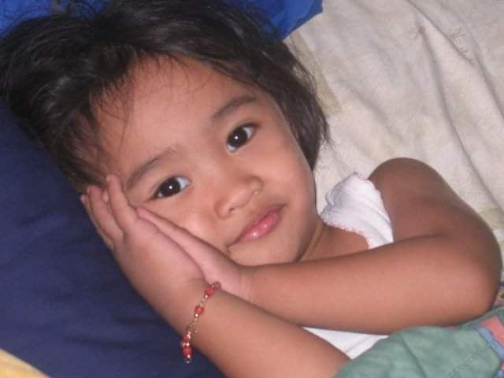
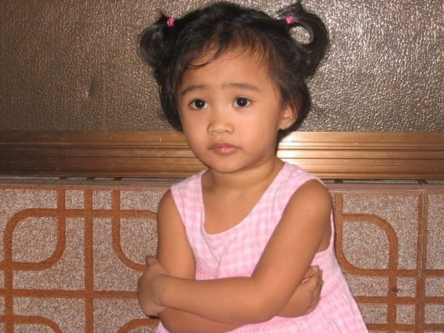
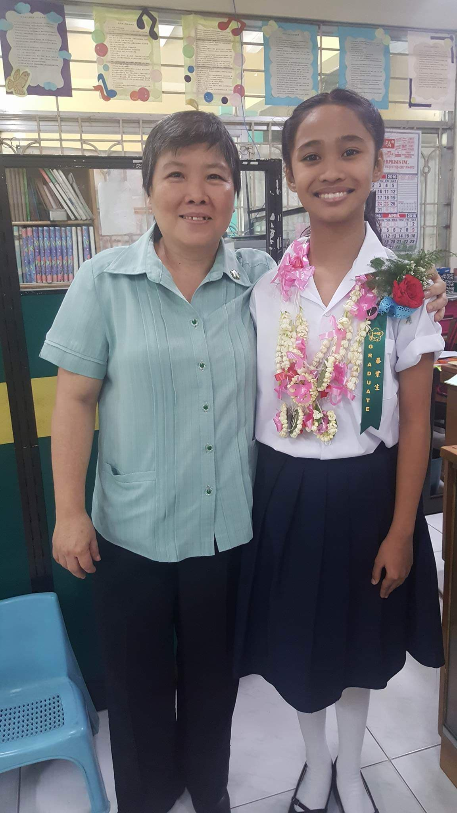
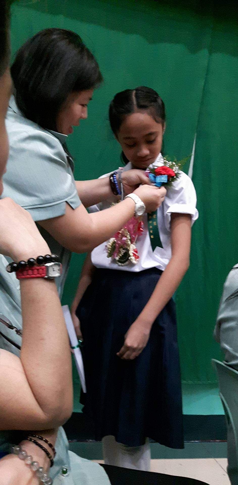
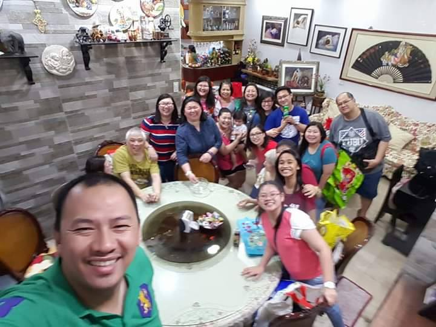
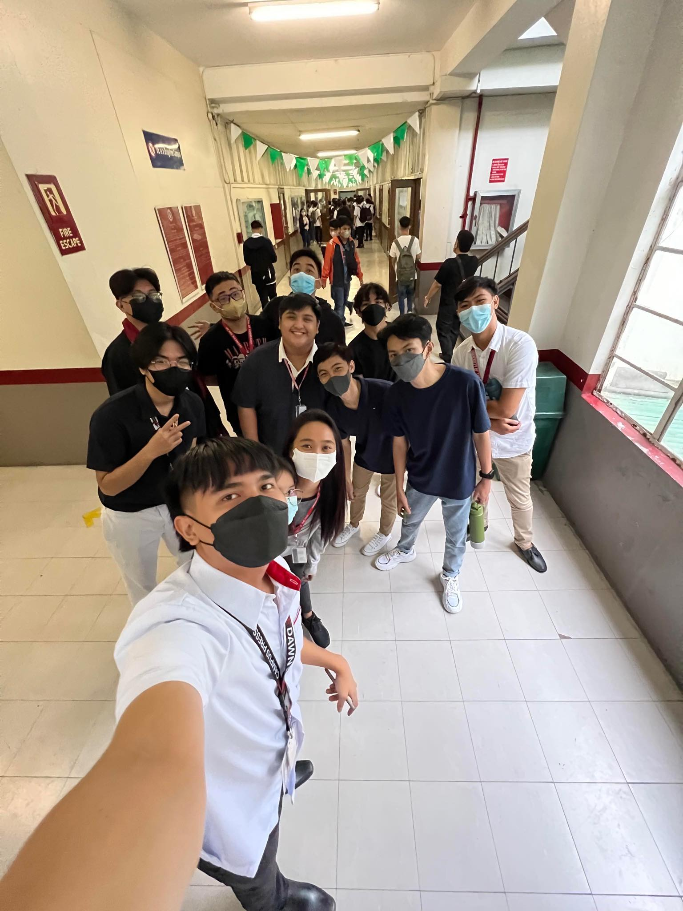
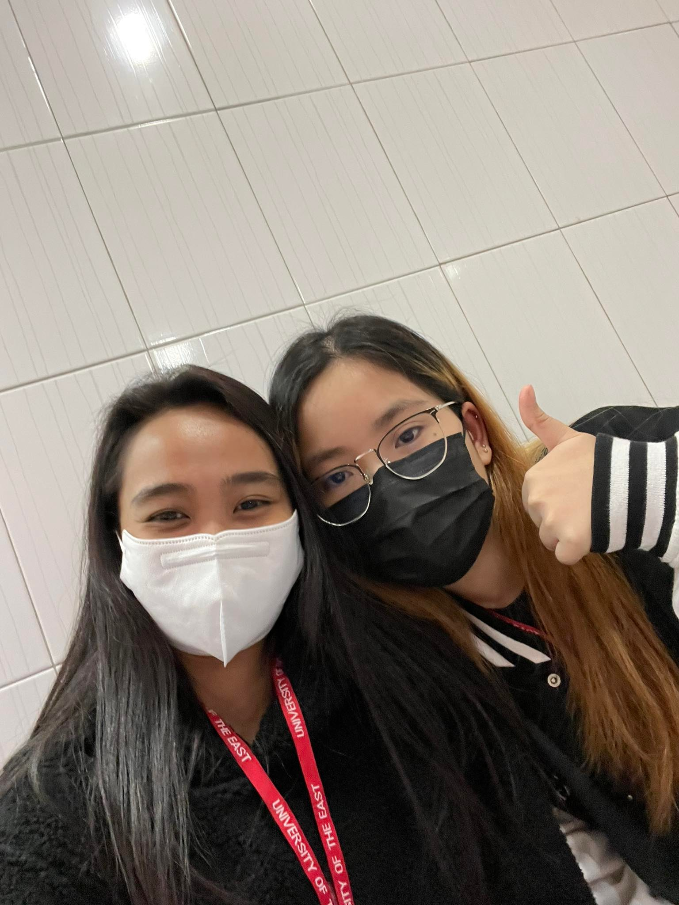
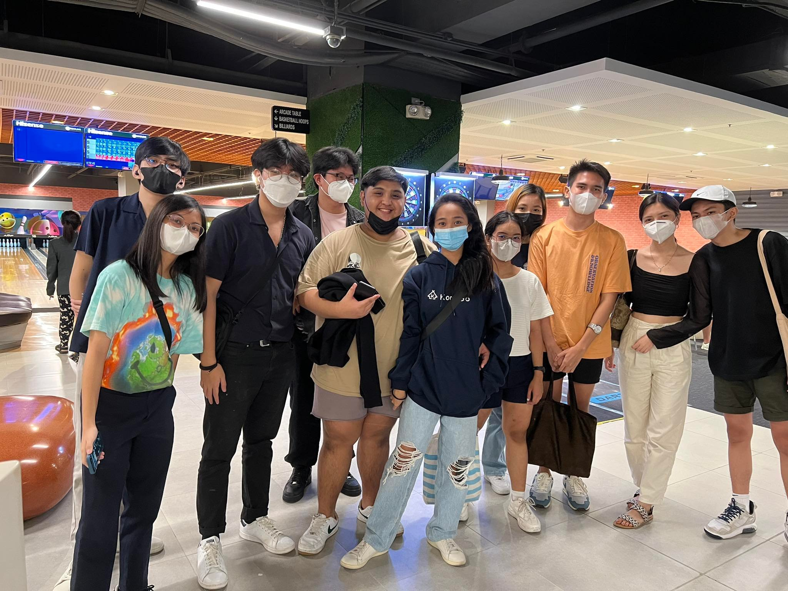

Berna's Life Journey
Bernadette Ongdueco Tan
MEMORABLE CHILDHOOD
My name is Bernadette O. Tan. My middle initial is Ongdueco. I was born in August 20,2003. I am now 19 years old. I was born in
Calamba, Laguna. When I was still a baby I used to lived at Zamboanga because my mother is teaching there. When I was 2 years old,
we moved to Quezon City with my grandparents. When I was still a child, I was very quiet while my cousins(mother side) are very active
at everything. My mother enrolled me at PIQC. When I got home, my auntie volunteered to teach me how to read, write and to understand
things that I don't know. She teaches me how to use po and opo, teaches me how to add and subtract numbers. That time, I don't really
love playing adding and subtracting numbers. There was a time that she asks me what is 1+1 and since I'm lazy and I told my aunt that
may I go to the CR the she nodded, while going to the CR, I ask my mom's sister what's the answer of 1+1 and she jokingly answered me
that the answer is 11, when I go back and tell my auntie that the answer is 11, she hit me on the hand and keeps on telling me that,
that was not the right answer. Now that I'm sharing this story, it's kinda funny because I'm really bad and slow at adding and
subtracting numbers. After 1 year at PIQC. My mother transferred me in another school and that school is PCC. I have a story
when I was grade 1 HAHAHAHA and I think I'll be able to make you laugh. Because that time I have a tutor and my tutor's name is
Editha Hilario, we were studying math and I have a small calculator inside my pocket while she was making a subtraction questions for my
tutormates to answer and I am already answering mine. I put my right hand in my pocket and starting to press numbers in the calculator
and starts peeking at my right side. After that my tutor is curious why am I so quick to answer the mathematics given and after that
she saw me that I'm using the small calculator. Ofcourse, she got disappoint in me. After that she scolded me and we really stayed
until I know how to subtract numbers.


TEENAGE YEARS
I don't really know how to start and share this story but for grades I can share it. When I became a teenager I thought everything would
be okay like nothing bad would happen to my family. I just thought that nothing would happen but it did. When I was grade 9,
on weekends I watched a kdrama titled "My Secret Hotel". That time my mom was sleeping, my cousin named Anne is baking red velvet
cupcake and my other cousin is at the second floor taking care of her baby. We have 2 "kasambahay" one is just chilling at the rooftop
cause its windy and one is hanging our clothes, then after that they heard that something fell. At first they know that its a tool,
but when they saw that my cousin Anne is on the floor, one of our kasambahay run fast and she woke my mom up and said that she should
check my cousin who was lying on the floor. At that time I thought it was a surprise, thats why the "kasambahay" quickly went upstairs
to wake my mom up, so I also wanted to know what was happening around me, so I followed them. When I followed them, I didn't think that
my cousin was lying on the floor. I panicked, I didn't know what to do, mom said I should tell achie Diana that something happened to
achie Anne. That was the first time I saw my mom reviving my cousin infront of me. After that they rushed to St.Lukes Hospital,
the doctor said she still had a pulse, but when our "kasambahay" got home, she said that achie Anne was gone. Achie Anne was a
pre-school teacher at PCC. Every after our last test, achie Anne will always asks me to help her check the works of her students or
when she go tutors the students, we buy something to as a snack. She looks grumpy but once you get to know her she's very kind.
The type when you need something, she will help you check grammar or spelling in English. Example, I don't know how to draw, she will
just tell me that don't worry I got your back. She was literally there when we needed her help. She is the best cousin in the world.
I remembered that when I didn't get to eat lunch because the student councils were really busy fixing things. Then my mom called me and
said that Let us go home, and I replied my mom that we we're not able to eat lunch yet can stay for 1 more hour? My mom replied me and
said NO, we're going home, parties over! Ofcourse, at that very moment I am super sad that I didn't get to eat my lunch with my
colleagues and yeah I told my colleague in the student council that I was going home. That's how I got my depression and I can't get
rid of it.



COLLEGE YEARS
I'm currently 19 years old, has long straight black hair, my height is just average as well as my weight. When you see me being happy
I'm smiling and very talkative but deep inside... I can be emotional too I'm just an ordinary person like you I also have problems
that can't be solved easily. On the other hand, I'm also active, playful, and hyper I can get along well with other people I play lots
of sports like volleyball, badminton and some filipino games and because of this I make lots of friends. You may not know my story,
but I gave you some of my information. Let's get to know each other, and explore this fantastic world around us. I met many friends and
a guy here in UE. My friends are Silverio Terenz, Ayson Katherine, Sy Juliana, Zate Julliana, Manlogon Aaron, Regala John Raymond,
Abing John Reno, Andal Denver, Ruego John Martin and ofcourse Santos Sean. I'm lucky with my college friends right now, because when I
was in high school/senior high, I used to listen to their problems when they are having a hard time, but when I was the one with a
problem, they just ignored me. It's only now that I feel from my friends that I'm important to them because they don't neglect me,
they really treat me like your youngest sister. I am very thankful to my friends and especially to my boyfriend. They never leave me.
Sean was there at my worst, he stayed, and he always take care of me. When I, my cousin and nephew got into trouble, it was like we
were really fighting, not talking in person as in even in chat. The whole house literally knew that there was something between the
three of us. Sean knew something was off. Sean was not at home but he called me on discord, he is the one who is there to calm me
down. Sean stops me from everything I want to do to myself that is bad. I will tell you something, when it happened on January 26
after 4:30pm class. Some if my friends wanted to go out after class but I didn't go because at that time I felt that all of the
problems were on me and that nothing would go away. I don't want Sean to see my that I'm out of my mind so I chatted Terenz,
I asked him that where are they? Can they take sean away from me? I just want to be alone. After 1 minute, Terenz sent me a message
and said that they we're at the CCSS lobby. At that time I'm literally crying so hard pushing Sean away and I want Sean to go with them
but Sean did not go with them. He stayed. Sean literally can't talk to me properly and I wasn't thinking straight anymore.
I only know that time the solution is to die. When Sean couldn't stop me from whatever I was thinking, what Sean did was he called my
cousin Trisha Ongdueco. Achie Trisha didn't answer because she was also busy with work. But Sean didn't stop calling her but I
stopped Sean from calling because I didn't want one of my family members to know what I wanted to do. When I calmed down a bit,
Sean talked to me about what the problem was, so I told him while I was crying. Sean told me that he understood but now all answers are
death. If I die now, what about him? What will my family think about the cause of my death? When I got home achie Trisha suddenly
asked me why Sean called her, then I just told achie Trisha that it's nothing, I'm just tired and just want to rest at home. After a
few days, abing texted me asking what happened and said I opened up to him. So I said since it happened, I'll just tell the story.
So when I told him that I was planning to kill myself at that time. He got angry with me and he cursed me. Then he just told me that
if you died, what about your friends right now, what about Sean, and my family? Aren't you thinking? I immediately said no, I wasn't
in the right frame of mind at that time. Then he told me that if you do that again, I told you, he cursed me again and told me that
we're F.O. That's why I'm very very very thankful to them. And now, I'm still alive and telling this story to you. To be honest,
it's hard for me to talk about what happened to me before. I'm still struggling to this day.


"
comeback home